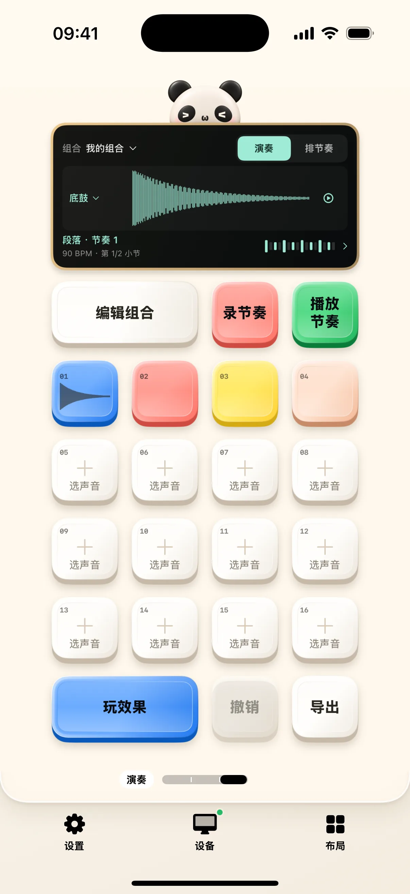

采样布局可以在不连接 Mac 时使用。录下身边的一段声音，选出有意思的片段，再把它放到鼓垫上演奏。奶猫妙控把录声音、切片与演奏做成同一套布局的三个桌面，保留原来的分页与编辑方式。
从自己的声音或文件开始
初次进入是空工程，可以使用麦克风录音或导入音频文件，也可以主动载入示例鼓声。按住空垫开始录音，松手保存到对应位置；录音键适合持续录制。声音库保存原始声音，完整乐曲可以先保留，再选择工作片段。
切片时保留原音
切片页支持瞬态自动切片、等分和手动边界。波形中的彩色区域与试听垫对应，可以边听边调整。切片记录原音中的位置，原文件不会因为划分边界而被裁掉；演奏组合则把需要的声音映射到十六个位置。

把片段组合成节奏
演奏桌面支持多指打击、实时叠录、逐格编辑、速度、摇摆与循环。可用静音和独奏检查各声部，再加入滤波、回声、混响等效果。声音库、演奏组合和节奏段落分别保存，切换组合不需要重新导入声音。
保存与录音来源
工程自动保存，循环可导出 WAV，工程可导出包含音频的 ZIP 备份。当前版本也加入手机和 Mac 声音采集入口；手机内录由系统录屏流程启动，受来源应用限制，受保护音频可能不可采集。使用内录前先确认正确来源，录音结束后再回到声音库试听。
开始使用
- 打开「采样」，录一段声音或导入音频。
- 切到切片桌面，试听并调整边界。
- 在演奏桌面打节奏，最后导出 WAV 或备份工程。
常见问题
采样一定要连接电脑吗？
麦克风录音、文件导入、切片与本地演奏不需要 Mac。采集 Mac 声音时才需要相应连接。
包含完整 DAW 或 MIDI 导出吗？
当前提供本地采样、节奏与音频导出，不包含完整 DAW 的全部编排功能或 MIDI 导出。
本文对应 1.2.0。查看更新说明，或加入 iPhone / iPad TestFlight。